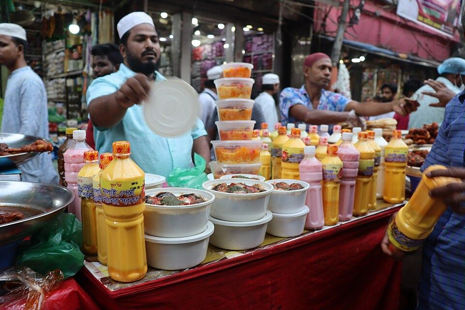

Why go
Every Ramadan afternoon the square fills with stalls: shahi jilapi, keema paratha, koel roast and the legendary 'boro baper polay khay'. Go for the spectacle, even if the food doesn't always match the hype.
- Hours
- Ramadan only, afternoons until iftar.
- Closed
- Outside Ramadan
- Quiet times
- Outside Ramadan
- Busy times
- Ramadan, roughly 14:00 to Maghrib
- Time to spend
- 45–90 min
- How well known
- Famous
- Good for
- Friends · Solo
What to order
| Shahi jilapi · শাহী জিলাপি | |
| Keema paratha · কিমা পরোটা | |
| Koel roast (quail) · কোয়েল রোস্ট | |
| Boro baper polay khay · বড় বাপের পোলায় খায় |
Getting there
- Walking
- Narrow, crowded or broken lanes
- Facilities
- No washroom listed
- Tip
- Roads close to vehicles at peak hours. Extremely crowded; not for elders or small children.
The pin is placed by street and has not been confirmed at the entrance yet. Ask a shopkeeper for the last few metres.
Festivals here
- Ramadan, The ninth month of the Islamic calendar, about 30 days. The Chawkbazar iftar market fills the square every afternoon before sunset. Opening hours change across the city; Ahsan Manzil closes at 15:00. Eid ul-Fitr follows at the end of the month.
- Shab-e-Barat, The night of 14–15 Shaban. Old Dhaka's night of bread and halwa. After sunset the century-old roti and halua market reopens around the Chawkbazar Shahi Mosque, and bakeries in Bangshal pile huge breads and halwa across their floors. Families share food door to door, mosques stay full, and graveyards are lit for prayers for the dead.
History
Chawkbazar has been the old city's market square since Mughal times; Subahdar Shaista Khan built the Chawk Mosque beside it in 1676, and the Naib Nazim Mirza Lutfullah rebuilt the bazaar in 1728.
Photos
The giant jilapi coils and the crowd under stall lights. Inside: Open air.
Nearby
- Alauddin Sweetmeat2 min walk
- Chawkbazar Shahi Mosque2 min walk
- Shah Sahib's Biryani2 min walk
- Choto Katra3 min walk